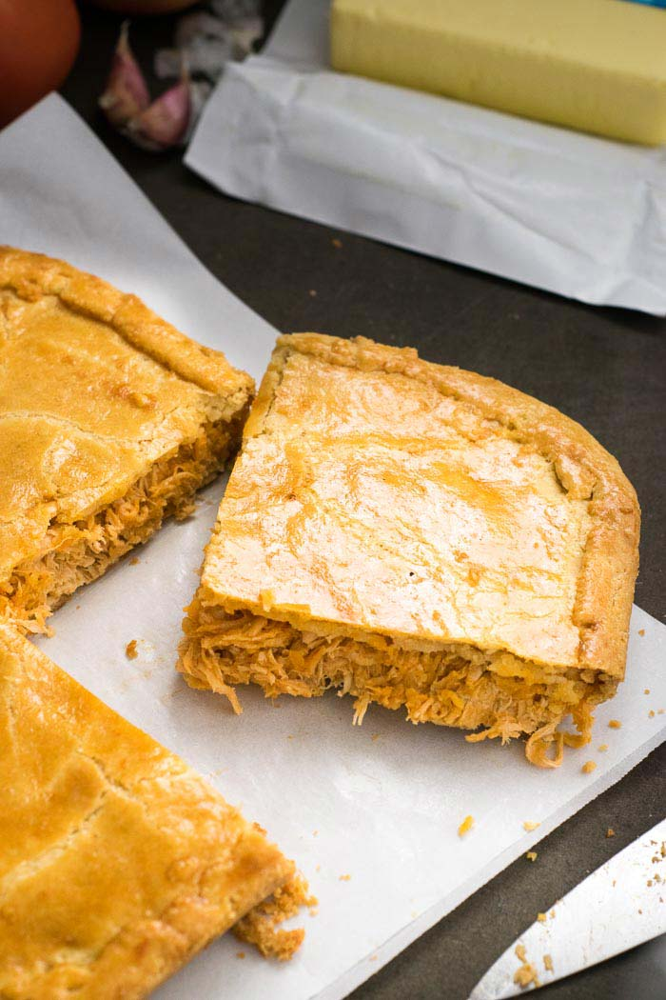
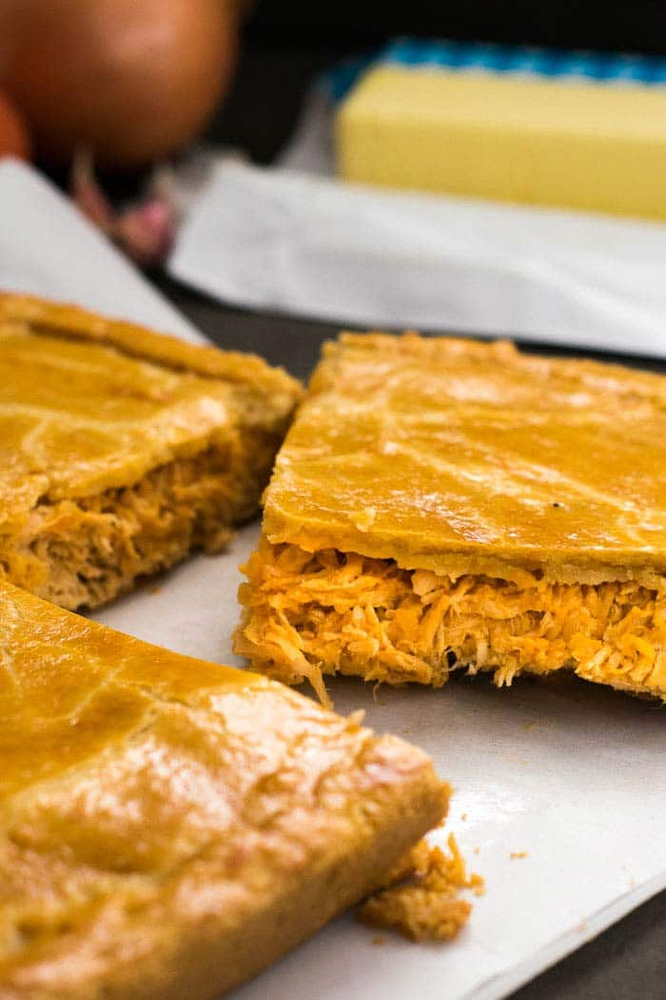

Pastelão de Frango

Ingredientes
Recheio
- 1 peito de frango (aproximadamente 500g)
- 1 cubo de caldo de galinha
- 6 colheres (sopa) de extrato de tomate
- 1 colher (sopa) de azeite de oliva
- 2 dentes de alho bem picados
- 1 cebola pequena picada
- 3 colheres (sopa) de requeijão ou queijo catupiry
Massa
- 3 xícaras de farinha de trigo
- 1 ovo
- 200 gramas de margarina (forno e fogão) ou manteiga em temperatura ambiente
- 1 colher (chá) de sal
- 1 gema de ovo para pincelar
Modo de Preparo
Recheio
- Cozinhe o peito de frango na água com o cubo de galinha e 3 colheres de extrato de tomate. Quando o frango estiver cozido deixe esfriar e desfie.
- Em uma frigideira grande aqueça o azeite de oliva e adicione a cebola e o alho. Cozinhe até que fiquem levemente dourados e adicione o frango desfiado. Adicione o restante do extrato de tomate e cozinhe por aproximadamente 2 minutos. Desligue o fogo e adicione o requeijão/queijo catupiry. Reserve.
Massa
- Misture todos os ingredientes (exceto a gema de ovo para pincelar) e sove por um minuto aproximadamente, até que os ingredientes fiquem bem misturados. Se a massa estiver muito seca adicione 1 colher de leite.
- Divida a massa em dois, com uma metade um pouco maior que a outra.
Montagem
- Pré aqueça o forno a 180C.
- m uma superfície enfarinhada coloque a metade maior da massa e abra com um rolo. A massa deve ficar grande o suficiente para cobrir o fundo e as bordas do refratário e ainda ficar 1 cm para fora (nós utilizamos uma forma quadrada de 23cmX23cm).
- Coloque o recheio por cima da massa e espalhe. Abra a outra metade da massa e coloque por cima do recheio. Aperte a junção das massas para selar. Pincele a massa com ovo. Asse por 30 a 40 minutos, ou até que a massa esteja dourada.
